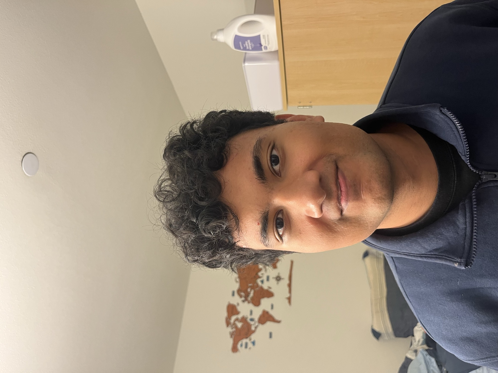
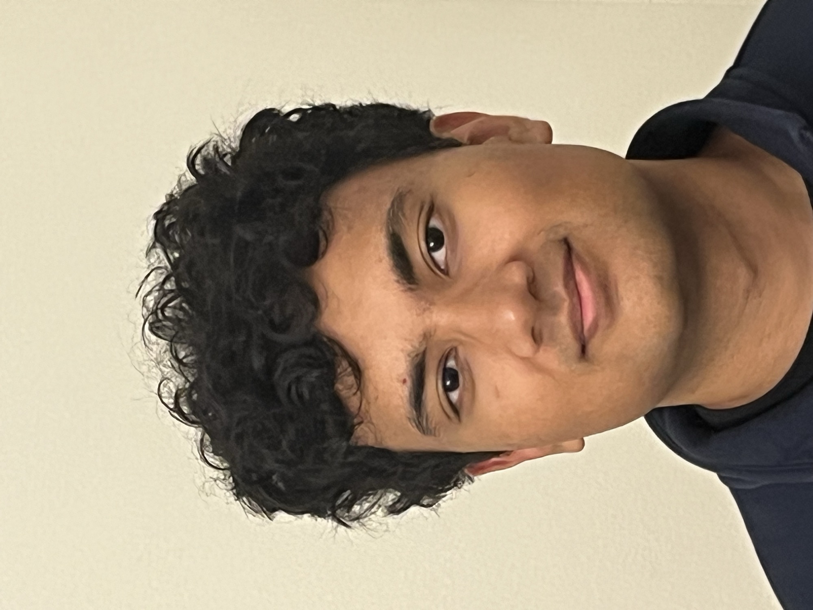
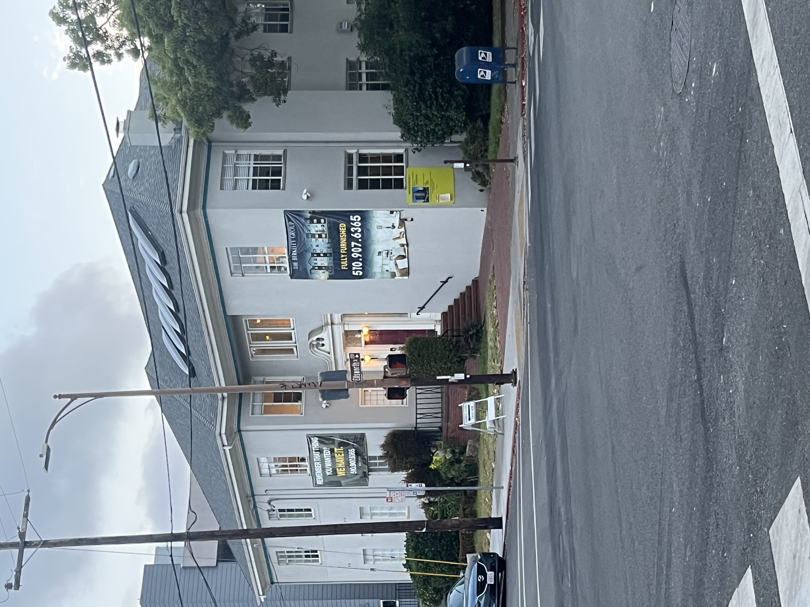
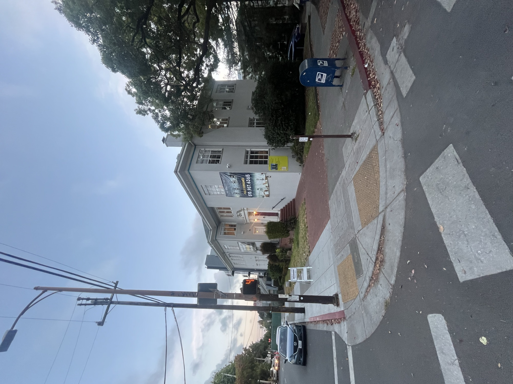
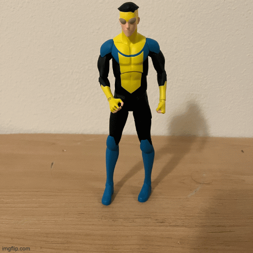

CS 180: Project 0
Part 1: Selfie: The Wrong Way vs. The Right Way


For this part, I took two photos of my friend while trying to keep his face roughly the same size in the frame. In the first photo, I was standing very close to him, which made his face look more distorted, especially around the nose and center of the face. For the second photo, I stepped farther back and zoomed in. Even though the framing is similar, the second photo looks noticeably more natural because stepping farther back makes the facial proportions look less exaggerated.
Part 2: Architectural Perspective Compression


For this part, I photographed a building near the intersection of Ellsworth and Durant. I took one photo from farther away while zoomed in, then moved closer and took another with less zoom. The farther image looks flatter, while the closer image shows more depth. I think this happens because when the camera is farther away, the differences in distance between the near and far parts of the building become less noticeable. This makes the building look more compressed. The framing is not perfectly the same in both pictures because I was standing around the Ellsworth and Durant intersection trying to get the shots and got honked at, so I decided getting an absolutely perfect match was probably not worth getting run over.
Part 3: The Dolly Zoom

For the dolly zoom, I used an action figure of Mark Grayson as the subject. I moved farther away from the figure while zooming in, trying to keep him about the same size and position in each photo. The result is not perfect, but the background still changes noticeably between frames while Mark stays relatively stable. I think this happens because zooming in keeps the subject looking roughly the same size, while physically moving the camera changes the perspective and makes the background appear more compressed.